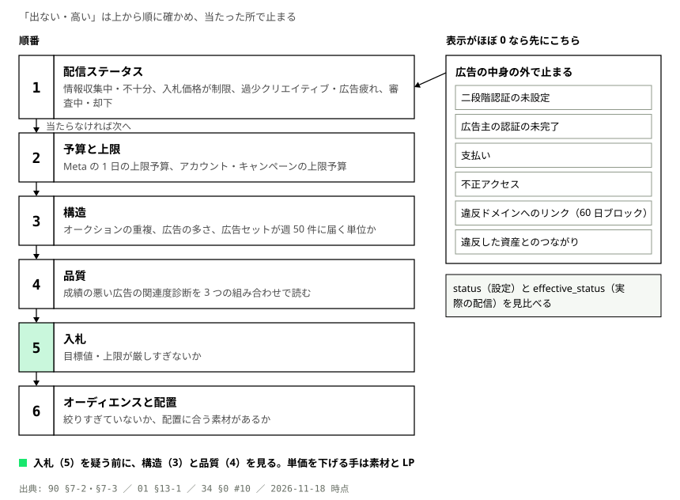

[ Meta / 90 ]
90核となる理解（Meta 広告の運用を、仕組みから考えるための 1 本）
位置づけ: Meta の知識ベース（このフォルダの約 1.3 MB）を、AI が最初に 1 回読む形に蒸留したもの。手本は ../Google広告の基礎/90_核となる理解.md（以下 G90）。各節の芯は「Google と何が同じで、何が違うか」。Google の運用の原理（../Google広告の基礎/運用の型/、以下 型04§6 の形）はそのまま使い、Meta での当てはめは 36 に従う
このメモについて
- 確認日: 2026-11-18。材料はこのフォルダ（00・01・02・06・23・26・34・36・92・93・94・96）だけ。新しくウェブで調べていない
- 位置づけ: Meta の知識ベース（このフォルダの約 1.3 MB）を、AI が最初に 1 回読む形に蒸留したもの。手本は
../Google広告の基礎/90_核となる理解.md（以下 G90）。各節の芯は「Google と何が同じで、何が違うか」。Google の運用の原理（../Google広告の基礎/運用の型/、以下型04§6の形）はそのまま使い、Meta での当て… - 凡例: ✓ 公式で確かめた／△ 公式どうしが食い違う、または言い方が揺れる（両方を伝える）／? 確かめられていない
- 印: 公式Meta のヘルプ・開発者文書・広告規定・発表 ／〔推測〕各章の書き手の読み ／〔当てはめ〕運用の型の規則・式を Meta の公式の事実に当てはめた結論（
36の印。公式が言っていることではない）／推論式と定義から導いた値（運用の型の印）
地図
本文
1.この文書の使い方
- 同じ言葉で意味が違うもの
- 古い手順書・記事・学習時点の記憶は疑ってかかる
- 1
最初に 1 回、全部を読む。Meta の質問は、ここに書いた筋で考え始める
- 2
答える前に、該当の場所を引いて確かめる。
00§6-2は同じフォルダの章と節、M-学習-012 はrules.csv／92の id、96#22は96の表の行、94#18は94の行、G90§5-2は Google 側の 90。ここにある数字だけで答えを言い切らない - 3
Google の知識をそのまま持ち込まない。同じ言葉で意味が違うもの（コンバージョン、学習、手動入札、オーディエンス、日予算、配置、品質）は
00§12の表で必ず読み替える - 4
知識ベースに無いこと、? のことは「未確認」と言う。推測で埋めない。△ は両方を書く
- 5
Meta は 2025〜2026 年に名前と仕組みを大きく変えた（Advantage+ の統合、アトリビューションの定義の変更、ターゲティングの縮小、配置の廃止、AEM の簡素化）。古い手順書・記事・学習時点の記憶は疑ってかかる。確認日から 30 日を過ぎた事実は出典を取り直す
2.運用型広告としての Meta
- 目的（キャンペーン）とコンバージョンの場所（広告セット）は公開後に変えられない
- 何を帰還させるかに「窓」と「モデル」が入る
- 検索語句
- 素材が「誰に届くか」まで決める
- 機械に移った範囲が Google より広い
- 教える（最適化イベントと窓）と渡す（素材と LP）の質がそのまま結果になる
2-1.3 つの条件は同じ、引き金が違う
競り・可変・帰還の 3 条件（型01§1、G90§2-1）は Meta でもそのまま成り立つ〔当てはめ〕（36§1）。
| Google（G90） | Meta | |
|---|---|---|
| 競り | 検索 1 回ごとに広告ランクで並べる | 表示の機会 1 回ごとに「全体的な価値」が最も高い広告が勝つ ✓（M-オークション-001・002） |
| 可変 | 配信しながら入力を変えられる | 同じ。ただし目的（キャンペーン）とコンバージョンの場所（広告セット）は公開後に変えられない ✓（00§2-2、M-種類-003）。アトリビューションモデルも公開後に変えられない ✓（M-計測-086） |
| 帰還 | 結果が学習データに戻る | 同じ。ただし何を帰還させるかに「窓」と「モデル」が入る（§8-3） |
| 引き金 | 検索語句。人の指定は補助 | 人。フィードや動画を見ている人に、オーディエンス条件の中から配信システムが選んで出す。検索語句は無い ✓（00§1） |
引き金が人であることから、Meta は「需要を刈り取る」より「需要を起こす」側の媒体になる（00§1）。指名検索のような手堅い需要は無く、素材が「誰に届くか」まで決める〔推測〕（00§1・00§7-4）。
2-2.二重の輪と、機械に移った範囲
内側の輪（機械）と外側の輪（人）の二重の輪（型01§5-1、G90§2-3）も同じ。違いは、機械に移った範囲が Google より広いこと（36§1 型01 の行）。Meta の機械は入札額だけでなく、誰に（Advantage+ オーディエンス）、どこに（Advantage+ 配置）、どの素材を（広告セット内の配信の偏り、Advantage+ クリエイティブ）、どの広告セットに予算を（Advantage+ キャンペーン予算）まで決める。
人に残る 4 つ（目的を決める・媒体の外の情報を持ち込む・機械の出力を確かめる・予測される中身を変える。G90§2-3）は Meta でも同じ。任せる範囲が広いぶん、教える（最適化イベントと窓）と渡す（素材と LP）の質がそのまま結果になる〔当てはめ〕。
2-3.何を最大にするか
増分利益 ＝ N × q × ι × g − 広告費（G90§2-5、型02§1）はそのまま使う。Meta で違うのは 2 点〔推測〕（36§1 型02 の行）。
- ι（増分率）が動きやすい: 既定のアトリビューションがビュー（見ただけ）を含み、配信は成果に至りやすい人、つまり既存顧客や買う寸前の人に寄りやすい。管理画面の 1 件が事業の 1 件から離れやすい
- ι を確かめる道具が管理画面にある: 「増分の結果」の列（機械学習の推定）と、条件を満たせばコンバージョンリフト（実験）✓（
26§3・26§5）。Google では公式のリフトに最低条件があり使えないことが多い点は同じ構図
3.機械が何をしているか
- ①の入口が検索語句でなく人
- ⑤の前に「同じ広告主の広告は 1 本に絞る」が入る
- Google の「マッチング」に当たる予測が、Meta では「誰に出すか」の予測そのもの
- 主に入札価格・推定アクション率・広告品質の 3 要素
- 2020 年の解説の式
- 価格下限
3-1.1 回の表示で起きること
① 表示の機会が生まれる（フィード・ストーリーズ・リールなどを見ている人） ② その人を対象に含む広告を集める（広告主の「制約」が一次の条件） ③ 取り出し（Andromeda。候補を絞る） ④ 順位付け: その人について「推定アクション率」と「広告の品質」を予測 ⑤ 全体的な価値が最も高い広告を出す（同じ広告主からは 1 本だけ） ⑥ 結果（見た・押した・成果・隠した・報告した）が次の予測の学習データになる
（00§3-1 ✓公式。Andromeda・GEM・Lattice は Meta 自身の発表で、数字は自己申告 00§3-2）
Google の流れ（G90§3-1）との違いは 3 つ。①の入口が検索語句でなく人、⑤の前に「同じ広告主の広告は 1 本に絞る」が入る（オークションの重複、§3-3）、そして Google の「マッチング」に当たる予測が、Meta では「誰に出すか」の予測そのものになる〔推測〕。
3-2.勝ち方と払う額
- 全体的な価値は主に入札価格・推定アクション率・広告品質の 3 要素で決まる。入札が最も高い広告が勝つとは限らない ✓（M-オークション-002、今の日本語ヘルプ 430291176997542）
- 「入札額 × 推定アクション率 ＋ 広告の品質」は 2020 年の解説の式で、今のヘルプは式を書かない △（
01§2-3、96#15）。式を「公式の現行の式」と言わない - 価格下限があり、表示の可否と支払額に影響しうる。Meta は品質・テスト・法令・地域の費用などで結果と価格を調整することがある。入札価格を超えて請求しない ✓（M-オークション-003・004）
- 支払う額の計算式（二位価格かなど）は公式に無い ?（M-オークション-005）。Google の「1 つ下の広告ランクを上回る最低額」（G90§3-6）に当たる説明は見つかっていない
- 広告品質は、見た人・隠した人の反応と、低品質の特徴（情報を隠す、扇情的な表現、「いいね！して」のようなエンゲージメントベイト）で決まる ✓（M-オークション-006）。審査（ポリシー）と品質（オークション）は別の関門で、審査を通っても品質で負ける（
00§3-4）
Google と同じ結論が出る: 入札を上げる前に、推定アクション率と品質で勝つ（00§3-4〔推測〕、02§3-7）。
3-3.配信システムの 4 つの性質（Google の常識とずれる所）
| 性質 | 中身 | 取り違えると | 引く場所 |
|---|---|---|---|
| 単価の最小化 | 各広告の最適化イベントの単価を最小にするよう動く。広告セットの中では単価が最小になりそうな広告を出すので、広告ごとの配信量は均等にならない | 配信の少ない広告を「負け」と決めつける | ✓ M-オークション-015、96#35 |
| 将来の予測で決める | 過去の成績ではなく将来の予測で配信先を決める | 過去の勝ち負けで素材を並べ替える | ✓ M-オークション-016 |
| 配置は全体の平均単価で選ぶ | 最大数量では配置ごとでなく全体の平均単価を抑えるよう配置を選ぶ。単価の高い配置を外すと、他の配置で高い機会を取りにいき全体が上がりうる（ヘルプの例: 平均 3 ドル → 3.25 ドル） | 配置別の単価だけで配置を外す | ✓ M-配置-013、01§3-4、96#33 |
| オークションの重複 | 自分の広告が 2 本以上同じオークションに入ると、合計価値の最も高い 1 本だけが選ばれる。広告アカウントを分けても同じ広告主と識別されて起きうる。予算の未消化と情報収集期間の長期化を招き、予算を増やしたときに目立つ | 「切り口ごとに広告セットを分ける」「代理店ごとにアカウントを分ける」で競合が消えると思う | ✓ M-オークション-017〜019、01§6、96#34 |
Google でも同じアカウントの広告どうしは競らない（G90§3-1 の⑥⑦）。Meta の違いは、アカウントをまたいで起きうることと、重複で件数が割れると各広告セットが週 50 件に届かなくなること（01§6-4〔推測を含む〕）。
3-4.どの単位で学ぶか ― 学習は「時間」ではなく「件数の関門」
| Google（G90§3-3・§5-2） | Meta | |
|---|---|---|
| 何の状態か | 入札戦略のステータス「学習中」 | 広告セットの配信ステータス「情報収集中」（情報収集期間、英: learning phase）✓（M-学習-001・007） |
| 単位 | 入札戦略（キャンペーン、ポートフォリオ）。成果率の学習は検索語句単位でアカウント全体 | 広告セット ✓。Google の「アカウント全体の検索語句単位で学ぶ」に当たる仕組みは確認できない ?（00§1） |
| 抜け方 | 最長 7 日の時間の表示 | 最後の大幅な編集から 1 週間以内に約 50 件の結果で抜ける件数の関門 ✓（M-学習-002）。ショップ広告はウェブ 17 件以上＋Meta 5 件以上の購入 ✓（M-学習-003）。50 件は選んだ窓の中の成果で数える ✓（M-学習-004） |
| 足りないとき | 推奨目標値が出ない など | ステータス「情報収集が不十分」（英: Learning limited）。原因はオーディエンスが小さい・予算が少ない・入札（目標）が低い ✓（M-学習-005・006） |
| 引き金 | 新しい戦略、戦略への出し入れ、最適化する成果の大きな変更。予算・目標値・広告・ターゲティングの変更では出ない | ターゲット・クリエイティブ・最適化イベントの変更、広告セットへの新しい広告の追加、7 日以上の停止、入札戦略の変更が大幅な編集。予算・目標の金額は「変更の度合いしだい」（$100→$101 はほぼ入らない、$100→$1,000 は入りやすい。何 % からかは ?）✓（M-学習-008〜015、ヘルプ 316478108955072） |
| 入らないもの | — | Advantage+ キャンペーン予算での配分、同じキャンペーンへの広告セットの追加、別の広告セットだけの編集では、ほかの広告セットは入り直さない ✓（M-学習-016）。7 日未満の停止は一覧に無い ✓（94#2） |
| 学んだことが消えるか | 予算・目標値の変更では消えない（公式） | やり直し（reset・restart）と書く。過去のデータがどれだけ引き継がれるかは ?（00§6-4） |
ここが Meta の運用でいちばん効く違いである。Google の知識ベースで最も強く覆した「予算や広告文を変えても学習中にならない」（G90§10 #8）は、Meta にはそのまま持ち込めない。素材の差し替えも、広告の追加も、7 日以上の停止も引き金になる（96#1・#2）。そして件数の関門なので、週 50 件に届かない設計は、待っても抜けない（00§6-4）。
構成への含み〔推論・当てはめ〕: Google では「成果率の学習は広告グループを分けても割れない」（G90§3-3）が、Meta では学習の単位が広告セットなので、広告セットを分けるたびに週 50 件が割れる（36§1-3 束ねるの行）。だから Meta では「構成は入札の学習のためには分けない」がいっそう強くなり、訴求や年代の違いは広告セットではなく広告（1 広告に最大 10 素材 ✓ M-配置-015）で持つ（36§4-3〔当てはめ〕）。
3-5.入札 ― 「手動」の意味が Google と違う
| 日本語ヘルプの分類 | 戦略（管理画面の名前） | API | 何をするか |
|---|---|---|---|
| 消化金額に基づく | 最大数量／バリュー最大化 | LOWEST_COST_WITHOUT_CAP | 予算を全額使いながら結果（価値）をできるだけ多く。単価は抑えない |
| 目標に基づく | 結果の単価目標（旧 コスト上限）／ROAS 目標（旧 最低 ROAS） | COST_CAP／LOWEST_COST_WITH_MIN_ROAS | 週平均の単価（ROAS）を目標付近に保つ。守られる保証は無い。目標を守るために予算を使い切らないことがある |
| 手動 | 入札価格上限 | LOWEST_COST_WITH_BID_CAP | 全オークションで「推定アクションあたりの入札」の上限。クリック単価の上限ではない |
（✓ M-入札-001〜011、02§2）
- △ 「手動入札」の範囲が文書で違う: 日本語ヘルプは入札価格上限だけを「手動」と呼ぶ。開発者文書は単価目標・ROAS 目標・入札上限の 3 つを manual bidding と呼び、ヘルプ「バリュールールについて」も ROAS 目標と入札価格上限を「手動入札戦略」と書く（M-入札-001、
96#12）。社内で「手動入札はやめよう」と決めると、Meta では単価目標の禁止を意味してしまう - オークションの中では「インプレッションあたりの入札 ＝ 推定アクションあたりの入札 × 推定アクション率」として使う ✓（
00§3-1）。Google の「入札 ＝ 係数 × 予測」（G90§3-4）と同じ形で、目標値は係数、予測は機械の仕事という読み方はそのまま使える〔当てはめ〕 - Google の入札単価調整に当たるのはバリュールール（年齢・性別・地域・OS などで入札を最大 1,000% 増・90% 減。手動入札戦略では使えない）。入札の倍率（Bid Multipliers）は 2027 年までにバリュールールへ移る ✓（M-入札-035〜037、
96#41） - 課金は多くの最適化目標でインプレッションだけ ✓（M-入札-030）
3-6.教師データ ― 最適化イベントと「窓」
Google では「コンバージョン」列に入る成果がすべて教師データで、メイン／サブで選ぶ（G90§3-5）。Meta にはメイン／サブの仕組みが無く、広告セットごとに最適化イベント（パフォーマンス目標）を 1 つ選ぶ（36§1-3 教えるの行）。
さらに Meta では、アトリビューション設定が最適化にも使われる（attribution_spec は「最適化のための成果の割り当て」）✓（M-計測-010）。つまり窓（クリック 7 日か 1 日か、ビュー 1 日を含むか）とモデル（標準・インクリメンタル・カスタム）が「何を正解とするか」を決める。Google では計測の設定だった窓が、Meta では教える類に入る（36§1-3）。詳しくは §8-3。
3-7.品質の診断 ― 関連度診断
| Google の品質スコア（G90§3-6） | Meta の広告関連度診断 | |
|---|---|---|
| 単位 | キーワード | 広告 |
| 中身 | 推定クリック率・広告の関連性・LP の利便性の 3 要素と 1〜10 の値 | 品質ランキング・エンゲージメント率ランキング・コンバージョン率ランキングの 3 つ。それぞれ「平均より上／平均／平均以下（下位 35%・20%・10%）」の 5 段階 ✓（M-オークション-007・010） |
| オークションの入力か | 入力ではない（診断値） | 入力ではない（「広告オークションには影響を及ぼしません」）✓（M-オークション-008） |
| 出ないとき | 「—」 | 表示 500 回未満。品質ランキングは過去 35 日分、ダイナミッククリエイティブでは出ない ✓（M-オークション-009・011） |
使い方の型は Google と同じ（3 つの組み合わせで原因を切り分ける）。Meta 自身が「成果の出ている広告はランキングが平均以下でも気にしなくてよい。ランキングを主要な目標にしない」と書く ✓（M-オークション-012）。例: エンゲージメントは平均以上でコンバージョン率だけ平均以下 → 素材ではなく LP・オファー・CTA（00§3-4、36§7 #11）。
3-8.Advantage+ は「種類」ではなく「状態」
- 旧 Advantage+ ショッピングキャンペーン（ASC）・アプリキャンペーン（AAC）という種類は廃止。今は売上・アプリの宣伝・リードの目的で、3 つの自動化（Advantage+ キャンペーン予算・Advantage+ オーディエンス・Advantage+ 配置）がそろうと、キャンペーンが「Advantage+」の状態になる。1 つでも欠けると外れる。状態は直接オンにできない ✓（
00§4-2、96#6） - 旧 ASC の「既存顧客への予算上限」は新しい形では使えない。既存顧客の広告セットと除外の広告セットに分けて代える ✓（
96#7） - 移行すると学習段階に戻る ✓（M-学習-020）。v26.0（2026-07-29）以降、移行していない旧 ASC/AAC は編集できない ✓（
00§4-2） - アカウント制御（広告アカウントの [広告設定] の最低年齢・除外地域・配置の除外）に置いた制約は Advantage+ の状態を崩さない。ただし特別な広告カテゴリ・社会問題/選挙/政治の広告には効かない ✓（M-ターゲティング-009・010、
00§4-4） - 売上・リード・アプリの宣伝では Advantage+ 配置が既定で、広告セットで配置を手で選ぶ選択肢は廃止（段階的）。認知・トラフィック・エンゲージメントは選べる ✓（M-配置-014、
96#36）
Google との対応〔推測〕: Advantage+ の 3 操作は、Google の P-MAX のように「任せる範囲が広い種類」に近いが、Meta ではふつうのキャンペーンの設定の組み合わせとして現れる。任せる前の前提（計測と最適化イベントが正しい、絞りが法令上必須でない、配置に合う素材がある）は 36§1-3 の委任のスイッチの表にある。
4.人が動かせるものと、その効き先
- アトリビューションのモデルと窓
- 窓が教える側に入る
- 素材がターゲティングの役目も担う
- （地域・最低年齢・言語・除外するカスタムオーディエンス）、アカウント制御、特別な広告カテゴリ、広告のスケジュール（通算予算だけ） |
- 年齢・性別・詳細ターゲット・類似・含めるカスタムオーディエンスは「提案」で、囲う類ではなく
- 分けるたびに週 50 件が割れる
4-1.入力口は 6 類のまま、中身が変わる

運用者が動かせるのは、候補を囲う制約、予測の材料になる素材と提案、入札と量を決める入札・予算、正解を教える目的・最適化イベント・計測で、それぞれ 1 回の表示の別の段に効く〔当てはめ〕。入札・予算は予測を良くしないので、予測を良くしたいときは素材と教える中身を直す。
出典: 90§3-1・90§4-1・90§4-2 ほか 9 件 · 2026-11-18 時点
表で見る（6 行。上の図のもとの表）
| 類 | Meta の主な操作 | Google との差 |
|---|---|---|
| 教える | 最適化イベントとコンバージョンの場所（公開後は変えられない）、カスタムコンバージョン、購入の値と通貨、ピクセル＋CAPI と重複除外、EMQ を上げる顧客情報、アトリビューションのモデルと窓、CRM 用 CAPI | メイン／サブが無く広告セットごとに 1 つ。窓が教える側に入る |
| 渡す | 画像・動画・文・CTA、1 広告に最大 10 素材、Advantage+ クリエイティブの各機能のオン・オフ、リンク先（LP）、名義（ページ・Instagram） | 素材がターゲティングの役目も担う〔推測〕。素材の変更が大幅な編集なので、待つ期間が長い |
| 囲う | Advantage+ オーディエンスの制約（地域・最低年齢・言語・除外するカスタムオーディエンス）、アカウント制御、特別な広告カテゴリ、広告のスケジュール（通算予算だけ） | キーワード・検索語句・除外キーワードが無い。年齢・性別・詳細ターゲット・類似・含めるカスタムオーディエンスは「提案」で、囲う類ではなく渡す類に近い手がかり〔当てはめ〕 |
| 換える | 入札戦略 5 つ、目標額、予算（日予算・通算・予算のスケジュール）、バリュールール | バリュールールが入札単価の調整に当たる〔当てはめ〕 |
| 束ねる | キャンペーン／広告セット／広告の数、Advantage+ キャンペーン予算、予算共有（20%）、アカウントの分け方 | 分けるたびに週 50 件が割れる。複数キャンペーンを束ねるポートフォリオ入札は無い ? |
| 事業を変える | オファー、価格、LP の中身、成約の対応 | 同じ |
（36§1-3。✓ の根拠は同節の id）
囲うが痩せ、渡すが太る（36§0 #4）。Google の検索では「どの検索に出すか」を語句で囲えたが、Meta では囲えるのは地域・最低年齢・言語・除外だけで、それ以外は機械への手がかりにすぎない。
4-2.「制約」と「提案」の 2 層
| 種類 | 入るもの | 配信システムの扱い |
|---|---|---|
| 制約（オーディエンス制御） | 地域、最低年齢、言語、カスタムオーディエンスの除外 | 広げない。ただし地域は［広告に反応する可能性が高い人へのリーチを増やす］を選ぶと外に出る |
| 提案 | 年齢の範囲、性別、詳細ターゲット、含めるカスタムオーディエンス、類似 | 成果が上がりそうなら外の人にも出す |
（✓ M-ターゲティング-001・002・026、23§2-2）
- 提案を制約に変える道はある（［オーディエンスをさらに制限する］）。その代わり Advantage+ オーディエンスは外れる ✓（M-ターゲティング-003）
- 詳細ターゲットの除外は v22.0（2025-01）で廃止。類似オーディエンスは除外できない。除外として守られるのはカスタムオーディエンス ✓（M-ターゲティング-020・027）
- 最適化目標が価値・オフサイトのコンバージョン・LP ビュー・クリックなど 21 種のとき、類似と詳細ターゲットの拡張は強制でオン ✓（M-ターゲティング-016、△ M-ターゲティング-017）。v27.0 からは類似の国も指定できず、広告セットの地域で配信 ✓（M-ターゲティング-015）
- リターゲティングには Advantage+ オーディエンスを勧めないと Meta 自身が書く ✓（
23§0#5） - 特別な広告カテゴリでは Advantage+ オーディエンスを使えない（ヘルプ本文を正とした）✓
判断の型〔推測〕（00§7-4、23§13-1）: 「誰に出したいか」を、制約に置けるかで 2 つに分ける。法令や事業の都合で外せない線（未成年に出せない、商圏外、既存顧客を外す）は、最低年齢・地域・カスタムオーディエンスの除外・アカウント制御に直す。置けない条件（「30〜40 代の女性に」）は提案でしかなく、外にも出ると割り切る。Google の P-MAX のオーディエンス シグナルと同じ読み方でよい〔推測〕。
4-3.入札まわりは予測を良くしない（同じ）
G90§4-3 の「入札まわりの操作は予測を良くしない」は Meta でも成り立つ〔当てはめ〕。Meta 公式の書き方もこの側にある: 全体的な価値で勝つには推定アクション率と品質、制約 d（品質・素材）では入札を上げる前に素材を足す・直す（36§1-4 制約の表）。効率と量の取り合いの線を動かすのは素材と事業だけ、という結論も同じ。
Meta で 1 点だけ足す〔当てはめ〕: 渡す類（素材）の操作が大幅な編集なので、Google より「1 回の素材の変更が高くつく」。素材は思いつくたびに足さず、足す日を週 1 回に決めて 1 広告にまとめる（36§7 #21）。
5.時間の法則
- 広告マネージャの既定は ?
- 予算の週は日曜〜土曜
- （第 5）定義の変化
- 2026-03 からクリックスルーはリンクのクリックだけ
- 件数の事実
- Meta 公式の「目標を変えたら 7 日以上待つ」と W ＝ 14 日は矛盾しない
5-1.読み誤りの源 ― Google の 4 つに 1 つ足す
| 源 | Meta で何が起きるか | 引く場所 |
|---|---|---|
| 学習 | 情報収集期間（件数の関門）。単位は広告セット | ✓ M-学習-001・002・005・007 |
| 遅れ | ①窓（クリック最長 7 日、ビュー・エンゲージスルー 1 日）②CAPI のウェブのイベントは最大 7 日遅れて届きうる ③オフラインは最大 62 日 △ ④成果を表示の日に付けるか成果の日に付けるかは API では action_report_time で選べるが、広告マネージャの既定は ? | ✓ M-計測-012・053・054、△ M-計測-060、M-計測-094、36§1-2 |
| 振れ | 数学は同じ（30 件の CPA は ±36%）。単位は広告セット、件数は窓の中の成果 | 型04§4、G90§5-5 |
| 周期 | 同じ。加えて予算の週は日曜〜土曜。比べる期間を日〜土にそろえると予算の週と評価の週が一致する〔当てはめ〕 | ✓ M-予算-005 |
| （第 5）定義の変化 | 仕様の側が数え方を変える。2026-03 からクリックスルーはリンクのクリックだけ（いいね・保存などのあとはエンゲージスルー）、動画の基準は 10 秒 → 5 秒、広告主ごとに順次。2026-01-12 から API はビュー 7 日・28 日を返さない | ✓ M-計測-014・015、94#6 |
5-2.大幅な編集を「過渡の大きさ」に置き直す〔当てはめ〕
| 変更 | Meta の扱い | 過渡 | 待つ期間 |
|---|---|---|---|
| 新しい広告セット・広告 | 情報収集期間が始まる ✓ | 大 | 7 日 ＋ W、かつ 50 件 |
| ターゲット・クリエイティブ・最適化イベントの変更、広告の追加、入札戦略の変更 | 大幅な編集 ✓ | 大（クリエイティブと広告の追加は Google では小） | 7 日 ＋ W |
| 7 日以上の停止 | 解除した時点で大幅な編集 ✓ | 大 | 再開から 7 日 ＋ W |
| 7 日未満の停止 | 一覧に無い ✓ | 小〜中〔推測〕 | その週を判定から外す |
| 予算額・目標額の変更 | 度合いしだい、閾値は ? | 5〜10% 以内は小、1〜2 割は中、2 割超は大（閾32 をそのまま） | 小: 次の週次／中: W／大: 7 日 ＋ W |
| アトリビューションモデル | 公開後に変えられない（新しいキャンペーン）✓ | 大 | 7 日 ＋ W。前後比較は台帳で |
| 旧 ASC からの移行 | 学習段階に戻る ✓ | 大 | 繁忙期の前に済ませる |
（36§1-2）
Google の「表示と過渡を分ける」（G90§5-2）は Meta でも使うが、Meta の「情報収集中」が消えたことは「50 件に届いた」という件数の事実なので、Google の「学習中」が消えたことより情報が多い（36§1-2〔当てはめ〕）。それでも判定は W ＋ L を待つ。
5-3.評価窓と判定期間（Meta 版）〔当てはめ〕
評価窓 W ＝ max（2 × C, 14 日）を 7 日の倍数に切り上げ（閾02 のまま） 管理画面で数える C は最長でもクリック 7 日の窓。多くは W ＝ 14 日 直近から除く日数 L ＝ 7 日（クリック 7 日の窓）／ 2 日（クリック 1 日の窓）推論 報告の日付の付け方が確かめられるまで 7 日で扱う 判定期間 P ＝ max（W, 1 広告セットで確定 50 件がたまる日数）を 7 日の倍数に切り上げ
（36§1-2）
- Meta 公式の「目標を変えたら 7 日以上待つ」と W ＝ 14 日は矛盾しない。7 日は次の小さな調整（5〜10%）を決めてよい最短、W は効いたかを判定する期間の長さ（
36§1-2） - 運用の型の「評価に足る件数 30 件／30 日」（閾04）は、Meta では「1 広告セットで週 50 件」に置き換わり、約 7 倍きびしい〔当てはめ〕（
36§0#2） - 事業の本当の C が窓（7 日）より長い商材では、窓の外の成果はそもそも教師に入らない（
36§1-2）
5-4.Meta 公式の時間の数字
| 何を | 値 | 印 |
|---|---|---|
| 目標つきの入札が最もよく働く件数 | 広告セットで週 50〜100 件以上 | ✓ M-入札-012 |
| 目標の初期値 | 結果の単価目標は過去 30 日の平均の単価 ＋10〜20%、ROAS 目標は平均 ROAS −10〜20% | ✓ M-入札-013・014 |
| データが無いとき | 最大数量（バリュー最大化）で 2 週間以上回して基準を作る | ✓ M-入札-015 |
| 評価 | 日次ではなく週平均。目標を変えたら 7 日以上待つ | ✓ M-入札-017 |
| 拡大 | 3 週間以上安定してから、予算を徐々に。入札の変更は 1 週間あける | ✓ M-入札-018 |
| 調整の幅 | 入札が制限・予算が制約のとき目標を 5〜10% 動かす | ✓ M-入札-019・020 |
| 変更の回数と時刻 | 入札と予算は 1 日 2〜3 回まで、1 日の早い時間に | ✓ M-予算-024 |
| 反映 | 予算は約 15 分、入札は 15〜20 分で認識。予算を変えて 15 分待ってから入札を変える | △ M-入札-024 |
Google の「予算は 20% まで」が実務家の目安だったのと同じく（G90§5-2）、Meta も予算・目標の変更幅の公式の閾値は無い ?（M-予算-021、96#3）。公式の数字として言えるのは上の表だけ。
5-5.予算は「週」で考える
| Google（G90） | Meta | |
|---|---|---|
| 1 日の上振れ | 日予算の 2 倍まで | 日予算の 175% まで（予算共有がオンなら 210%）✓ |
| 平均する期間 | 月（30.4 倍） | 週（日曜〜土曜）で 7 倍まで（予算共有なら 8.4 倍）✓ |
| 1 日の途中の変更 | — | その日の上限は「その日に設定された最も高い日予算 ＋75%」✓ |
| 週の途中の開始・変更 | — | 残りの日数で按分し、最大 25% の上乗せ ✓ |
ある日に 1.7 倍使っても異常ではない。暴走の線と月のペースは週で引く（36§0 #8）。月末の締めがある案件は最後の週の日予算で調整し、朝に変える〔推測〕（36§7 #20）。
5-6.件数が、できる運用を決める ― Meta 版の式〔当てはめ〕
最適化イベントの単価 ≦ 週の予算 ÷ 50 ≒ 日予算 × 0.14 置ける広告セットの数 ≦ 週の予算 ÷（50 × 最適化イベントの単価） 日予算の下限（1 広告セット）: 最大数量で想定単価の約 7 倍、結果の単価目標で目標の 5 倍以上（公式の最低線 ✓ M-予算-017）
（36§4-2・36§4-3。数値例はすべて仮定）
月 30 万円・購入単価 1 万円の通販なら購入は週 7 件で 50 件に遠い。単価 1,400 円以下のイベント（カート追加・決済開始）なら届く。届く最も深いイベントを選び、手前から購入への率を記録しておく（36§4-2）。この例で置ける広告セットは 1 つで、訴求の違いは広告で持つ。
5-7.少額・少量のアカウント
Google の「少量の道」（G90§5-7）の Meta 版は 3 つに尽きる〔当てはめ〕（36§0 #10）。
- 1広告セットをまとめる
（週 50 件に届く単位まで）
- 2最適化イベントを件数の多い手前の行動に上げる
（ずれは状2 の検査で記録して管理する）
- 3変更を週 1 回に束ねる
（素材の追加も大幅な編集）
加えて Meta 固有の注意: 日本の広告アカウントの最低予算は開発者文書の例示額の 2 倍の国に入る ✓（M-予算-015、円の額は ?）。リフト・ブランドリフト・MMM は多くの場合届かない（§8-5）。インクリメンタルのモデルは少額では使わず列を見るだけ（36§4-4）。
6.判断の順序
- 情報収集が不十分
- 状3（データが足りない）
- 重複除外・EMQ・カバー率 75%
- 窓とモデル
- 1 広告セットで確定した週 50 件
- 損失率（予算・ランク）に当たる指標が Meta に無い
6-1.状態の判定 ― Meta は「表示」で読める所が多い
9 状態と 8 つの問い（型06、G90§6-1）はそのまま使う。Meta では配信ステータスでかなりの部分を代えられる（36§1-4）。
| Meta の表示・事実 | 状態〔当てはめ〕 | まず確かめること |
|---|---|---|
| 却下・審査中（24 時間超）・アカウントの制限 | 状0 か、状4 の制約 a | ビジネスサポートホーム、ポリシーの詳細 |
| イベントが来ない・急に倍 | 状1 | ［イベントのテスト］で 1 件、event_id の一致 |
| 情報収集中 | 状8（過渡） | 最後の大幅な編集の日（「前回の大きな変更」の列） |
| 情報収集が不十分 | 状3（データが足りない）。状8 ではない | 予算・目標・制約の重なり、広告セットの数 |
| 入札価格が制限されています／週の予算が多く残る | 状4 の制約 b | 目標が過去 30 日の平均より厳しくないか |
| 予算を使い切り、CPA は目標内 | 状6 の候補 | 3 週間安定しているか |
| 過少クリエイティブ（単価が過去の 2 倍未満）／広告疲れ（2 倍以上） | 状5（素材の側） | 対象はクリエイティブ 1 件の広告セットだけ ✓（96#37） |
| 関連度診断が平均以下 | 状5 の切り分け、制約 d | 3 つの組み合わせ |
| 最適化スコアの推奨 | どの状態の根拠にもしない | 最適化スコアは実際の成績も将来の成績も反映しない ✓（01§6-3） |
読み替えが要る問いもある（36§1-4）。問 1 の計測の検査に 重複除外・EMQ・カバー率 75% を足す。問 2 の教える中身に窓とモデルを足す。問 4 の件数は「確定 30 件」でなく「1 広告セットで確定した週 50 件」。問 7 は損失率（予算・ランク）に当たる指標が Meta に無い ? ので、「予算を使い切り、3 週間安定し、CPA ≦ β × BE」を足す先の合図にする。
6-2.制約の特定（Meta 版）
| 順 | 制約 | Meta での見え方 | 打ち手 | 打ってはいけない手 |
|---|---|---|---|---|
| a | 審査・制限 | 却下、アカウント・資産の制限、上限予算 | 直して再審査。制限の異議は回数が限られ結果が最終 ✓ | 入札・予算を上げる |
| b | 入札（自分の縛り） | 「入札価格が制限されています」、週の予算が残る | 目標を 5〜10% 緩める ✓ | 予算を上げる |
| c | 予算 | 予算を使い切り、CPA は目標内 | 1 週間後に予算を徐々に ✓ | 目標を緩める |
| d | 品質・素材 | 関連度診断が平均以下、過少クリエイティブ・広告疲れ | 素材を足す・直す、LP・オファー | 入札を上げる |
| e | 構造・需要 | オークションの重複、広告セット・広告の多さ、オーディエンスの小ささ | 広告セットを結合して週 50〜100 件に ✓、制約を緩める | 予算を上げる（重複は増額時に目立つ ✓） |
（36§1-4）
Google では d と e を損失率で分けた（G90§6-2）。Meta は損失率が無いので、d は関連度診断とステータス、e は構造（重複・数）で見分ける〔当てはめ〕。Meta の e には「自分の構造が件数を割っている」が入るのが大きい。Meta の「入札が制限／予算が制約／予算を増やしても増えない」の 3 状態の表（02§3-3 ✓）は、制約 b・c・(d・e) とほぼ 1 対 1 に重なり、週次の点検にそのまま使える。
6-3.打ち手の順
運用の型の順（計測 → 定義 → 絞る → 素材 → 構成 → 入札・予算 → 広げる。G90§6-3）は Meta でも同じ〔当てはめ〕。ただし「絞る」の道具が少ないので、実質は 計測 → 定義（最適化イベント・窓・モデル）→ 素材 → 構成 → 入札・予算 → 広げる になる（36§1 型07 の行）。Meta 固有の 2 点:
- 定義は作る前に決め切る。目的・コンバージョンの場所・アトリビューションモデルは公開後に変えられず、変えるなら作り直し＝学習のやり直し（
36§4-1） - 構成の変更は Google より高くつく。分ければ件数が割れ、まとめれば大幅な編集になる。だから立ち上げの時点で「週 50 件に届く単位」を決める
6-4.修理と実験、テストの基準
修理は束ねて 1 回、実験は 1 単位・1 窓に 1 つ（G90§6-4）は同じ。Meta では修理を束ねる日に、素材の追加も寄せる（どちらも大幅な編集になりうるので、過渡を 1 回で済ませる）〔当てはめ〕。
テストの基準は Google の物差しと違う。
- Meta の A/B テストは信頼性 65% 以上で「統計的に信頼できる」、リフトは 90% 以上 ✓（M-効果測定-004）。期間 1〜30 日、7 日以上を推奨、検出力 80% 以上を推奨（保証ではない）✓（M-計測-019、
96#45） - 65% は運用の型の 95% の区間よりかなり緩い〔推測〕（
26§4-4）。戻せる判断（素材の入れ替え）は 65% で採ってよく、戻しにくい判断（構成の作り直し、予算の大きな移動、最適化イベントの変更）は 95% の区間で「効いた」になるまで待つ（36§6-3〔当てはめ〕） - A/B テストは両方とも広告を出すので増分は測らない。ホールドアウト付きの A/B は 2021-04-26 に［テスト］ツールで停止 ✓（
26§0#3）
7.指標が動いたときの考え方
- 配信は変わっていないのに数字が変わる
- 窓とモデル
- モデルが違う広告セットを一覧表で比べてはいけない
- 2026-03 のクリックの定義の変更
- 二段階認証の未設定、広告主の認証の未完了、支払い、不正アクセス、違反ドメインへのリンク（60 日ブロック）、違反した資産とのつながり
- 結果の単価が上がった
7-1.原因を探す前に、Meta 固有の「見かけの変化」を先に疑う
G90§7-2 の 3 つ（遅れ・構成比・振れ）に、Meta では次の 3 つを先に足す（36§3-4）。どれも配信は変わっていないのに数字が変わる種類。
- 1窓とモデル
広告セットごとに窓やモデルが違えば「結果」の数が変わる。モデルが違う広告セットを一覧表で比べてはいけない ✓（M-計測-011）
- 2遅れ
表示の日に付ける集計なら直近 7 日が欠けて必ず悪く見える。CAPI の夜間の一括送信はさらに欠けさせる ✓（M-計測-053・054）
- 32026-03 のクリックの定義の変更
自分のアカウントの切り替え日は自分で確かめるしかない ?。請求は変わらない ✓（M-計測-014）
加えて、構成比は Meta では「配置の配分」「キャンペーン予算の広告セットへの配分」「広告セット内の広告の偏り」で動く。どれも仕様で偏るので、配置別・広告セット別・広告別の単価だけで良し悪しを言わない（36§6-2）。イベントマネージャの件数 ＞ 広告マネージャの件数は正常 ✓（M-計測-080）。
7-2.「出ない・高い」の切り分けの順

配信ステータス → 予算と上限 → 構造 → 品質 → 入札 → オーディエンスと配置の順に確かめ、当たった所で止まる。表示がほぼ 0 なら、二段階認証・広告主の認証・支払い・違反ドメインなど広告の中身の外の原因を先に見て、status と effective_status を見比べる。
出典: 90§7-2・90§7-3・01§13-1 ほか 6 件 · 2026-11-18 時点
（01§13-1。上から当たった所で止まる）
- 1
配信ステータス（情報収集中／不十分、入札価格が制限、過少クリエイティブ・広告疲れ、審査中・却下）
- 2
予算と上限（Meta が置く 1 日の上限予算、アカウント・キャンペーンの上限予算）
- 3
構造（オークションの重複、広告の多さ、広告セットが週 50 件に届く単位か）
- 4
品質（関連度診断を 3 つの組み合わせで）
- 5
入札（目標値・上限が厳しすぎないか）
- 6
オーディエンスと配置（絞りすぎ、配置に合う素材）
止まっている原因は広告の中身だけではない。二段階認証の未設定、広告主の認証の未完了、支払い、不正アクセス、違反ドメインへのリンク（60 日ブロック）、違反した資産とのつながりでも止まる ✓（34§0 #10）。設定上の状態（status）と実際の配信状態（effective_status）を見比べる（00§11-3）。
7-3.代表の 3 つ（考える順番だけ）
結果の単価が上がった
- 1
見かけの変化（窓・モデル・2026-03・直近 7 日）を外す
- 2
大幅な編集の日をまたいでいないか（「前回の大きな変更」の列）
- 3
広告疲れ・過少クリエイティブ、関連度診断の組み合わせ
- 4
オークションの重複（とくに予算を上げた後）
- 5
下げる手は入札ではなく素材と LP。単価の高い配置を外さない（
96#33）
表示がほぼ 0 アカウント・ページ・個人のプロフィールの制限と支払い → 上限予算 → 却下・審査中 → 親の停止 → 制約の狭さ（地域・年齢・除外）→ 入札の縛り。Ads CLI の status と effective_status の差で原因を絞る（36§1-4、00§11-3）。
成果が急に 0、または急に 2 倍 0 ならイベントマネージャの受信とカスタムコンバージョンの URL ルール、2 倍ならピクセルと CAPI の event_id の一致（重複除外）。テストで 1 件か確かめる。目標・予算は触らない（06§14、36§7 #15・#16）。
8.計測と目的
- 週 50 件の関門が同時にかかる
- 照合できたイベントだけがアトリビューションと配信の最適化に使われる
- EMQ の「良い」の数値は公式に無い
- 8 件の優先順位付けは不要
- （窓の中の成果をすべて数え、それに最適化）／
- （広告が要因になったと機械学習が予測した増分だけを数え、それに最適化）／
8-1.何を最適化させるか
- 「これが増えたら利益が増えたと言えるか」に「はい」の行動を選ぶ（G90§8-1）。ただし Meta では週 50 件の関門が同時にかかるので、深さと件数の取り合いになる。届かないなら手前へ上げ、そのずれを記録する（§5-6）
- 購入には
valueとcurrencyを付ける ✓（M-計測-067）。値が違うなら価値の最適化・ROAS 目標の前提になる - リードの成約を最適化に戻すなら CRM 用コンバージョン API（コンバージョンリード）。条件はインスタントフォーム、月 200 件以上のリード、1 日 1 回以上のアップロード、狙う段階がリードから 28 日以内、その段階の転換率 1〜40% ✓（M-計測-064）
8-2.計測の基盤 ― CAPI は「入れたか」でなく「照合できたか」
| 要点 | 中身 | 引く場所 |
|---|---|---|
| 冗長な設定 | ピクセルと CAPI の両方で同じイベントを送るのが推奨 | ✓ M-計測-001 |
| 重複除外 | event_name と event_id をそろえる。fbp・external_id での除外は条件付き | ✓ M-計測-002・003 |
| 照合 | 照合できたイベントだけがアトリビューションと配信の最適化に使われる | ✓ M-計測-006 |
| 質の点検 | EMQ（0〜10、直近 48 時間）、カバー率（CAPI がピクセルの 75%）、追加で報告されたコンバージョン。EMQ の「良い」の数値は公式に無い ? | ✓ M-計測-049・051・052、? M-計測-050、96#43 |
| 7 日の壁 | event_time は送る時点から 7 日前まで。古いイベントが 1 つでもあるとリクエスト全体がエラー。売上・リードは 1 時間以内が推奨 | ✓ M-計測-005・053 |
| AEM | ウェブでは 8 件の優先順位付けは不要。［合算イベント測定］タブは削除、イベント設定のためのドメイン認証も不要 | ✓ M-計測-007、96#22 |
Google との違い: Google のオフライン取り込みの感覚で「何日前の成果でも後から送れる」と考えると、Meta の 7 日の壁で誤る（96#21）。B2B の商談化・成約を返す設計では、7 日以内に起きる段階を選ぶ〔推測〕。
8-3.アトリビューション ― Meta には「モデルの層」がある
| 層 | 中身 | 印 |
|---|---|---|
| モデル | 標準（窓の中の成果をすべて数え、それに最適化）／インクリメンタル（広告が要因になったと機械学習が予測した増分だけを数え、それに最適化）／カスタム（外部ツールのアトリビューションを共有し、それに最適化） | ✓ M-計測-011 |
| 窓（標準のときだけ） | クリックスルー: リンクのクリックから 1 日か 7 日。ビュースルー: 1 日。エンゲージスルー: リンク以外のクリックから 1 日（動画は 5 秒以上）。28 日クリック・28 日ビュー・7 日ビューは広告セットの設定から外れた | ✓ M-計測-012・084 |
| 既定 | API の default は「クリック 7 日＋ビュー 1 日」。同じページに逆の書き方もある。管理画面の新規作成時の既定（エンゲージスルーが入るか）はヘルプ本文に無い | △ M-計測-013、? 96#18 |
| 変えられるか | 公開後にモデルは変えられない（新しいキャンペーン）。窓を公開後に変えられるかは ? | |
| インクリメンタルの条件 | 目的が売上・エンゲージメント・リード、場所がウェブサイト（とアプリ）、目標がコンバージョン数か値の最大化。入札コントロール（単価目標・入札上限・ROAS 目標）は使えない | ✓ M-計測-085、M-入札-028 |
| 比べ方 | モデルが違う広告セットは一覧表で比べず、［アトリビューションモデルを比較］の列で。インクリメンタルの列は標準の広告セットでも見られる（2025-04-01 より前は出ない） | ✓ M-計測-087・088 |
Google との違いはここが核心: Google のデータドリブン／ラストクリックは「手柄をどう配るか」で、最適化の対象の成果そのものは変わらない。Meta のインクリメンタルは「増分とみなしたものだけを数え、それに最適化する」ので、数える対象が変わる（06§11-5）。Google の計測期間はアクション単位で 1〜90 日、Meta は広告セット単位で最長クリック 7 日。
使い分けの型（06§11-4〔推測を含む〕）: ふだんと少額は標準・クリック 7 日（ビュー 1 日は見るだけ）。GA4 と並べたいときは最適化を変えずに比較の列で窓を分けて見る。手柄の取りすぎが疑わしいときは、まずインクリメンタルの列を見て、差が大きければ新しいキャンペーンで試す。
8-4.Meta の数字は GA4 と合わないのが正常
- Meta はビューとエンゲージスルーを含め、人単位でデバイスをまたいで数え、欠けるところはモデルで補う。GA4 はクリックと Cookie が中心 ✓（M-計測-082）
- 媒体別の CPA の比較表は、窓をそろえないと Meta が安く見える（
96#16）。比べるならクリック 7 日の列にそろえる - 2026-03 以降はクリックスルーがリンクのクリックに限られ、ずれは小さくなる方向（
00§9-6） - 差が一定なら仕様、急な折れ点は実装の変化のサイン（G90§8-3 と同じ考え方）。真の値は台帳に置く
8-5.増分 ― 「実験」と「推定」を書き分ける
| 道具 | 何か | 使える条件 |
|---|---|---|
| A/B テスト | どちらが良いか（増分ではない） | すべての広告主 ✓ |
| コンバージョンリフト | 無作為の見せる群・見せない群の差（ITT）。結果は広告マネージャの数字と比べるためのものではない | セルフサービスの目安: 過去 1 年に開始した消化 5,000 米ドル以上・500 件以上のキャンペーン、CAPI で EMQ 5 超などのイベント。追加費用なし ✓（M-効果測定-009・010・013）。API で作るリフトは担当者経由 |
| 増分の結果（列） | 過去のリフトテストで学習したモデルの推定（推定指標）。実験ではない | 2025-04-01 以降の期間 ✓（M-計測-088・089、96#47） |
| ブランドリフト | 認知の差（アンケート） | 日本の最小予算 44,000 米ドル △（概要の表は過去 90 日 120,000 米ドル）（M-効果測定-015） |
| MMM（Robyn） | 媒体の配分 | 最低 2 年分の週次データ、実験での較正を強く推奨 ✓（M-効果測定-019） |
少額では、リフト・ブランドリフト・MMM は届かないと割り切り、増分の結果の列は順位として使い（絶対値を報告しない）、止める実験は 7 日未満の停止で行う〔推測〕（26§10）。報告では「Meta が計測した購入 120 件〔標準・クリック 7 日＋ビュー 1 日〕」のようにモデルと窓を必ず書く（36§6-4）。
9.素材・審査・安全で、Google と線の引き方が違う所
- 審査の再審査の引き金が違う
- 入札・予算・掲載期間の変更では再審査しない
- 却下の扱い
- まず編集して公開
- 広告の違反の回数表は公開されていない
- Meta 特有の落とし穴「個人の特性」
ターゲット設定・クリエイティブ・最適化・課金対象イベントの変更で再審査。入札・予算・掲載期間の変更では再審査しない ✓（M-ポリシー-004・005）。Google の「広告を触っていないから止まらない」は Meta では通じない（ターゲットの変更でも審査が起きる）。セールの初日に止まるのを避けたいなら、ターゲット・素材の変更は前の週に済ませ、当日は入札・予算だけを動かす〔推測〕（00§10-7）
再審査のリクエストで再び却下されると、その広告はもうリクエストできない。却下された広告を編集・削除しても違反は記録に残る。消すとリクエストもできなくなることがある ✓（M-ポリシー-024・026・027）。まず編集して公開、リクエストは判定が誤りのときだけ（34§0 #4）
（Google の 3 日・7 日停止の表に当たるものが無い）?（34§0 #6）。1 回目の却下から点検を全体に広げる〔推測〕
「あなたは糖尿病ですか？」「破産したあなたに」のように、見る人の特性（健康・年齢・財政状態・宗教など）を断定・示唆する文は却下 ✓（M-ポリシー-031）。日本の「〜でお悩みのあなたへ」の定番は、悩みが特性なら落ちる（34§2-9）
18 歳以上向けなら一般的な美容製品・処置の利用前後の描写は Meta の規定上は可。つまんだ脂肪のアップ、容姿の劣等感、条件なしの期間と成果の約束は不可 ✓（M-ポリシー-032・034・035）。日本の法規は別にかかる（31）
一括のオフは無く機能ごと。広告設定で「新しい最適化のテスト」にオプトインしていると、広告ごとに選ばなくても適用されうる ✓（96#26、00§8-4）。表現の管理が厳しい業種は入稿の点検に入れる〔推測〕
で、配信後もいつでも審査し直す ✓（M-ポリシー-002・003）
資産は 1 つのビジネスポートフォリオにだけ属し、ページ・Instagram・データセットの権限がそろわないと出稿も計測もできない ✓（M-アカウント-003）。制限の異議は管理者だけ、回数が限られ結果が最終、解除後も広告は自動で再開しない ✓（M-アカウント-015〜018）
10.よく間違える所（必ず読む）
| # | もっともらしい誤り | 正しくは | なぜ間違えるか | 引く場所 |
|---|---|---|---|---|
| 1 | Meta の学習も 7 日ほどで終わる | 件数の関門。最後の大幅な編集から 1 週間で約 50 件。届かないと「情報収集が不十分」が続く ✓ | Google の「学習中」（時間の表示）を持ち込む | M-学習-002、96#1、00§6-4 |
| 2 | 素材の差し替えや広告の追加は学習に関係ない | クリエイティブの変更も新しい広告の追加も大幅な編集 ✓ | Google では広告文の変更で「学習中」にならない | M-学習-009・011、96#2 |
| 3 | 広告セットを一時停止すると学習がやり直しになる | 大幅な編集になるのは 7 日以上の停止。7 日未満は一覧に無い ✓ | 初版の言い過ぎ（94#2）が広まる | M-学習-012、96#31 |
| 4 | 予算は 20% までなら学習はリセットされない（公式） | 公式は「度合いしだい」で数字が無い ?。20% は実務家の目安 | Google 側と同じ構図の取り違え | M-予算-021、96#3 |
| 5 | 日予算は 1.25 倍までしか超えない | 1 日 175%、週（日〜土）7 倍。25% は開発者文書 Budgets だけの古い記述 △ | 古いヘルプ・開発者文書を読む | M-予算-004・005、94#18 |
| 6 | 日予算の上振れは月で平均される | Meta は週で平均。Google は 1 日 2 倍・月 30.4 倍 ✓ | Google の予算の常識 | 96#5、02§5-5 |
| 7 | 手動入札＝単価目標・ROAS 目標・入札上限 | 日本語ヘルプでは「手動」は入札価格上限だけ。単価目標・ROAS 目標は「目標に基づく」△ | 開発者文書の manual bidding の呼び方 | M-入札-001、96#12 |
| 8 | 結果の単価目標はその単価を守ってくれる | 守られる保証は無い。目標が低すぎると予算を使い切らない ✓ | Google の目標値つき入札の感覚 | M-入札-011、96#13 |
| 9 | 目標単価は許容 CPA ちょうどか実績の平均に置く | 公式の推奨は過去 30 日の平均 ＋10〜20%（ROAS は −10〜20%）。データが無ければ最大数量で 2 週間以上 ✓ | 初版の推測が残る | M-入札-013〜015、96#38 |
| 10 | 入札・予算を変えると審査に回る／ターゲットの変更は審査と無関係 | 入札・予算・掲載期間は再審査なし。ターゲット・素材・最適化・課金対象で再審査 ✓ | Google の再審査の範囲を持ち込む | M-ポリシー-004・005、94#27 |
| 11 | AEM の 8 イベントの優先順位付けは今も必須 | ウェブでは不要。タブも削除 ✓ | 古い手順書・開発者文書の「8 つ」 | M-計測-007、96#22 |
| 12 | 日本の金融広告は Meta の金融の認証が必須 | 認証が必須なのは 10 地域で日本は入っていない（求められる場合はある）✓ | 初版の「日本でも別にかかる」 | |
| 13 | 特別な広告カテゴリでも Advantage+ オーディエンスを使える | 使えない（ヘルプ本文を正とした）✓。開発者文書の記述とは △ | 開発者文書の表を読む | M-ターゲティング-007 |
| 14 | 却下された広告は消せば記録も消える／再審査は何度でも頼める | 違反は記録に残る。再び却下されたら同じ広告はリクエスト不可 ✓ | Google の 1 広告 3 回の異議の感覚 | M-ポリシー-024・026、34§0-1 |
| 15 | 「Meta 担当者がいないとコンバージョンリフトは使えない」 | 管理画面のセルフサービスに目安がある（5,000 米ドル・500 件・EMQ 5 超など）✓。API のリフトは担当者経由 | 開発者文書の「利用は限られる」だけを読む | M-効果測定-009・010、96#46 |
| 16 | 年齢・性別・興味で絞れば、その人にだけ出る | Advantage+ オーディエンスでは「提案」で外にも出る。守られるのは地域・最低年齢・言語・除外 ✓ | Google の検索の「絞り込み」の感覚 | M-ターゲティング-001・002、96#9 |
| 17 | 興味・関心や類似オーディエンスで除外できる | 詳細ターゲットの除外は v22.0 で廃止、類似は除外できない。除外はカスタムオーディエンス ✓ | 古い管理画面の記憶 | M-ターゲティング-020・027、96#10・#44 |
| 18 | 「Advantage+ ショッピングキャンペーン」を作る | 種類は廃止。3 つの自動化がそろうと「Advantage+」の状態になる。移行は学習のやり直し ✓ | 古い研修資料 | 00§4-2、96#6・#8 |
| 19 | Meta の「コンバージョン」は Google と同じ数え方 | 既定にビュー 1 日が入る（API の default）。Google のクリックの計測期間は既定 30 日 ✓ | 同じ言葉 | 96#16、00§12 |
| 20 | 「クリックスルー」は広告のどこかを押したあとの成果 | 2026-03 からリンクのクリックだけ。いいね・保存のあとはエンゲージスルー ✓ | 定義の変更を知らない | M-計測-014、96#17 |
| 21 | アトリビューションは窓を選ぶだけ。モデルは後から変えて比べられる | 窓の上にモデルの層。公開後にモデルは変えられない。インクリメンタルでは単価目標などを使えない ✓ | Google のモデル（配り方）の感覚 | M-計測-011・086、96#32・#42 |
| 22 | CAPI を入れれば計測は直る／ピクセルの代わりになる | 両方を送り event_id で重複を除く。照合できたイベントだけが最適化に使われる ✓ | 「入れたか」で点検する | M-計測-001・002・006、96#20 |
| 23 | CAPI なら何日前の成果でも送れる | event_time は 7 日前まで。古いと全体がエラー ✓（オフラインは 62 日の記述あり △） | Google のオフライン取り込みの感覚 | M-計測-005、96#21 |
| 24 | 管理画面の「増分の結果」は実験の結果 | 機械学習の推定（推定指標）✓ | 名前の印象 | M-計測-089、96#47 |
| 25 | A/B の勝ちは 95% の信頼度で判断する（Meta の画面も同じ） | Meta の基準は 65%。運用の型の 95% の区間よりかなり緩い〔推測〕 | 統計の常識を画面の表示に当てる | M-効果測定-004、36§6-3 |
| 26 | 関連度診断を上げればオークションで有利 | オークションの入力ではない。成果の出ている広告は気にしなくてよい ✓ | Google の品質スコアと同じ取り違え | M-オークション-008・012、96#14 |
| 27 | オークションは入札額の高い順で、式は「入札 × 推定アクション率 ＋ 品質」（公式の現行） | 3 要素で決まる。式は 2020 年の解説で今のヘルプに無い △ | 古い解説の引用 | M-オークション-002、96#15 |
| 28 | 単価の高い配置を外せば全体の単価が下がる | 配置は全体の平均単価で選ばれる。外すと全体が上がりうる ✓ | 配置別の平均単価を限界と読む | M-配置-013、96#33 |
| 29 | 広告アカウントを分ければ自社の広告どうしは競合しない | アカウントをまたいでもオークションの重複は起きうる ✓ | 「アカウント＝広告主」と思う | M-オークション-018、96#34 |
| 30 | 広告セットの中の広告は均等に出る／配信の少ない広告は負け | 単価が最小になりそうな広告に偏る。将来の予測で決める ✓ | 均等配信の思い込み | M-オークション-015・016、96#35 |
| 31 | Advantage+ キャンペーン予算で使われない広告セットは止める | 止めると残りの CPA が上がりうる。止めずに原因を調べる。足すなら一括で ✓ | 広告セット予算の感覚 | 96#39、M-予算-028 |
| 32 | 「30 件たまれば評価できる」は Meta でも同じ | 学習の関門は 1 広告セットで週 50 件、目標つきは週 50〜100 件 ✓〔当てはめ〕 | 運用の型の閾04 をそのまま使う | 36§9、M-入札-012 |
| 33 | 量が出ない → 損失率（予算・ランク）を見て判断する | Meta の知識ベースに損失率に当たる指標が無い ?。週の予算が残るか使い切るかで読む | Google の制約の特定を持ち込む | 36§1-4、02§3-3 |
| 34 | 支払い単位額に達したら広告が止まる | 請求されるだけで広告は続く。止まるのは予算か上限予算 ✓ | 言葉の印象 | M-アカウント-020、96#40 |
| 35 | 「〜でお悩みのあなたへ」は定番なので審査も大丈夫 | 悩みが健康・財政・年齢などの個人の特性なら却下 ✓ | 日本のダイレクト広告の慣習 | M-ポリシー-031、34§2-9 |
10-1.公式に書かれていないのに、公式のように言われていること

「予算 20% ルール」「二位価格」「EMQ 6 以上が合格」「画像の文字 20%」などは公式の本文に無く、総合価値の式は 2020 年の解説のもので今のヘルプは 3 要素を挙げるだけ（△）。答えや資料に「公式では」と書く前に rules.csv の印と 94 を確かめ、無ければ「実務家の目安」「未確認」と書く。
出典: 90§10-1・M-予算-021・M-オークション-005 ほか 8 件 · 2026-11-18 時点
「公式では」と付けたくなったら、92・rules.csv の印と 94 を確かめる。次のものは公式の記載が無いか、別の文脈・古い数字である。
- 予算・目標の変更で学習がリセットされる閾値（20% など）（M-予算-021 ?）
- 支払う額の計算式（二位価格など）（M-オークション-005 ?）
- 総合価値の式が今も「入札 × 推定アクション率 ＋ 品質」（M-オークション-002 △）
- EMQ の合格点（6 以上など）（M-計測-050 ?、
96#43） - 管理画面のアトリビューションの既定にエンゲージスルー 1 日が入る（
96#18?） - 公開後に窓を変えられるか、変えると学習に響くか
- 広告の却下が何回で制限になるか（
34§14?） - 損失率・インプレッション シェアに当たる指標（
36§10?） - 「コンバージョン率ランキングは高額・検討の長い商品で低く出る」を活用方法のページの言葉として引く（個別ページ 617529305373441 の言い方。
94#16・00§3-3） - A/B テストの「2 週間以上」「75% 未満なら延長」（本文に無い。
96#45、00§9-5） - 画像の文字 20% ルール（今回の規定・ヘルプの本文に無い △ ?、
34§10） - 「Meta の担当者がいないとリフトは使えない」（
96#46）
11.引き方の早見表
11-1.問いの型ごとに
| 問いの型 | まず引く | 次に |
|---|---|---|
| できる／できない・上限・仕様 | 92（分野の節）・rules.csv（id で）。△ は 92 の「食い違いの一覧」も | 各章の該当の節 |
| なぜそうなるか | 00 の該当の節 → 各論（01 配信、02 入札・予算、06 計測、23 ターゲティング、26 効果測定） | G90、運用の型 |
| Google との違い | 00§1（対比表）・00§12（同じ言葉で意味が違うもの）、各論の「Google との違い」、96 | 93 の GX |
| 次に何をするか | 36§1-4（表示 → 状態）→ 36§7（判断の型 23 行） | 型06・型07、02§12・01§13・06§14・26§12 |
| 審査・却下・制限 | 34§0・34§2（却下の理由の表）・34§5（直し方） | 34§6（制限）、31（日本の法規） |
| この主張は正しいか | 94（裏取りの記録）・96 | 92 の印、95 の出典 |
| 用語・旧称 | 00§12、00§4-3（Advantage+ の部品の地図） | Google 側の 33_用語集.md |
| 理解の確認 | 93・quiz.jsonl（131 問、GX 29 問） | — |
11-2.問いの例と引く場所
| 問い | 引く場所 |
|---|---|
| 1. 「情報収集が不十分」が消えない。待てばよいか | M-学習-005・006、00§6-3、36§7 #2（待っても抜けない。縛りを 1 つ外す） |
| 2. 素材を毎日足したい／差し替えると学習は戻るか | M-学習-009・011、00§6-2、36§7 #21 |
| 3. 夜間・週末だけ止めたい | M-学習-012、96#31、36§7 #22 |
| 4. 予算をどれだけ上げてよいか | M-予算-021（?）、M-入札-018、02§3-3、36§1-2（閾32 の当てはめ） |
| 5. 結果の単価目標をいくらに置くか | M-入札-013〜015、M-予算-017、02§3-1、36§4-3、型02§4 |
| 6. 日予算 1 万円で 1 日 1.8 万円使われた。異常か | M-予算-004・010・026、92 の「引いてみた例」 |
| 7. 「入札価格が制限されています」が出た | 02§3-3・02§3-4、M-入札-019、36§7 #3 |
| 8. 広告セットは何本に分けてよいか | 36§4-3（式）、01§6（重複）、M-オークション-017〜019、M-予算-027 |
| 9. 年齢を 30〜50 歳に絞れるか／既存顧客を外したい | M-ターゲティング-002・003・005・024・027、23§2・23§7 |
| 10. 配置を外したい（Audience Network が嫌） | M-配置-013・014・016、01§9-2、△ M-配置-008 |
| 11. Meta と GA4 の購入数が合わない | 06§12、M-計測-082、36§6-2、36§7 #18 |
| 12. 前年比で成果が増えた／減った（2026-03 をまたぐ） | M-計測-014、36§3-4、36§7 #17 |
| 13. CAPI を入れたのに成果が変わらない | M-計測-006・049・051・053、06§6、06§14 |
| 14. AEM の 8 件を設定し直すべきか | M-計測-007、06§8-1 |
| 15. インクリメンタルを試したい／「Meta は盛っている」と言われた | M-計測-085・086・087、M-入札-028、06§11-4、26§7、36§7 #19・#23 |
| 16. Meta をやめたら成果はどうなるか（増分） | 26§2・26§5・26§10、M-効果測定-009・010・013 |
| 17. A/B テストの結果をどこで言い切るか | M-効果測定-004、M-計測-019、26§4、36§6-3 |
| 18. 旧 ASC を移行すべきか | 00§4-2、M-学習-020、96#6〜#8 |
| 19. 広告が却下された。再審査を頼むか | 34§0・34§5、M-ポリシー-023〜027 |
| 20. アカウントが制限された | 34§6、M-アカウント-010〜018、36§7 #14 |
| 21. 健康食品・美容の広告文は通るか（日本の法規も） | 34§2-9・34§2-10、M-ポリシー-031〜035、31、G31 |
| 22. 日本の金融・不動産・求人で特別な広告カテゴリは要るか | M-ポリシー-010・012・014・045、23§10、31 |
| 23. 立ち上げの最初の 3 週間で何をするか | 36§4-5（時間割）、06§13、02§12-1 |
| 24. Advantage+ をどこまで使うか（少額） | 36§4-4、00§4-4、M-ターゲティング-009・010 |
12.この知識ベースの限界
- ヘルプの本文は一部しか読めていない
- 裏取りは抜き取りである
- 〔当てはめ〕は公式ではない
- 管理画面の既定と表示名に未確認が多い
- 弱い分野
初版は検索結果の抜粋で書き、第 2 段と点検で約 35〜40 ページ（ほかに 34 の担当が約 20 ページ）を本文で取り直した。途中でログインの壁に当たり、残りは「抜粋」の印のまま（00§0、94「残っていること」）。「抜粋」の主張は本文を確かめるまで決めつけない
94 で照らしたのは 51 件で、覆った・言い過ぎ・抜けがおよそ 10 件あった（94 の結果の行）。確かめていない記述にも同じくらいの誤りが残っていると考えて使う
36 の W・L・P、過渡の大きさ、広告セットの数の式、週 50 件と閾04 の読み替えは、運用の型の式を Meta の公式の数字に当てはめたもので、自分のアカウントの記録で置き直す
アトリビューションの既定、報告の日付の付け方、損失率に当たる指標、Google の「コンバージョンを待機中」に当たる表示、Advantage+ クリエイティブのうち日本で既定オンの機能（36§10、00§13）
アプリ（SKAdNetwork）、カタログ・ショップ、メッセージ広告、Threads・WhatsApp の配置、ブランドリフト、04（構成）・05（クリエイティブ）・27（アカウント）の各論はまだ無い
確認日は 2026-11-18。Meta は月に何度もポリシーと API を変える（v27.0 は 2026-11-04、API のバージョンは 2026-07-29 から自動更新）。期日つきの変更は rules.csv の「変更予定」列と 00§11 を見る
13.書いている途中で見つけた食い違い（どちらかに決めずに挙げる）
- 限定支出（
placement_soft_opt_out） - 報告の日付の付け方
- 予算の 75% の適用範囲
- オフラインのイベントの期限
- ROAS 目標の範囲
- 入札の変更の反映
- 1限定支出（
placement_soft_opt_out）開発者文書は売上・リードで除外したい配置にも最大 5% を回せると書く。日本語ヘルプは売上・リード・アプリの宣伝で広告セットの配置の手動選択を廃止と書き、限定支出の記載が無い（M-配置-008 △、
96#25）。00§8-5は「限定支出 5% を先に考える」を残しつつ △ を併記している - 2
- 3予算の 75% の適用範囲
「1 日の予算について」は 75% と書き、「予算について」（214319341922580）は 75% を「一部のアカウントで段階的」と書く（
00§5-2、02§0#4 △）。 - 4オフラインのイベントの期限
ヘルプは最大 62 日、開発者文書は
event_time7 日前までと書きつつ同じページで 62 日以内のアップロードとも書く（M-計測-054・060 △） - 5ROAS 目標の範囲
ヘルプは 0.001〜1000.00、API は ROAS 0.01〜1000.0（M-入札-008 △）
- 6入札の変更の反映
「15〜20 分で認識」と「入札はすぐ新しくなる」が同じヘルプの本文に並ぶ（M-入札-024 △）
変更の記録
| 日付 | 内容 |
|---|---|
| 2026-11-18 | 初版（第 4 段）。00・01・02・06・23・26・34・36・92・93・94・96 から蒸留。新しい事実は足していない。よく間違える所 35 行、引き方の早見表（型 8 行・問い 24 行）、食い違い 6 件 |
[ 元 ] Meta広告の基礎/90_核となる理解.md